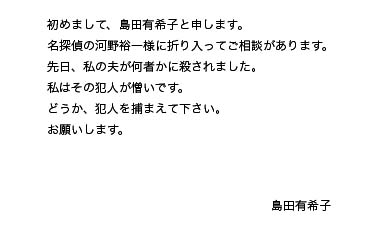

私の名は、河野裕一。
高校生探偵である。
私は今まで入れ代わりとか霊の存在などは信じず、物事を全て科学と頭脳で解決してきた。
だが、私はある日を境にジュンと入れ代わってしまう・・・。
その事がキッカケで、入れ代わりとか霊の存在など一切信じなかった私は、信じる様になった。
私は、自転車をこいでいた。
そこへ、角から自転車をこいでいるジュンと衝突した・・・。
その時だった。
私の身体は「スッ」と肉体から抜け出て、魂になり扇状に飛びながらジュンの身体に入って行った。
同時にジュンも魂が身体から抜け出て、私の肉体に入って行った。
ジュン（裕一）「（・・・・・・。）」
私は気が付いた。
私はとっさにジュンに声を掛けた。
ジュン（裕一）「おい、大丈夫か！？」
そこから出た声は私の声では無く、紛れも無くジュンの甲高くて可愛らしい声だった。
ジュン（裕一）「（えっ！）」
私は動揺した・・・。
何しろジュンの声で喋っているからだ。
暫くして、ジュン（私の本体）が目を覚ました。
裕一（ジュン）「君は、私なの？」
そこから発せられた声は、ジュンの物では無く私の声だった。
裕一（ジュン）「えっ！
私が、裕一君になってる！！」
ジュン（裕一）「俺達、入れ代わってしまった様だ・・・。」
裕一（ジュン）「嘘でしょ！？
これって、夢だよね？」
ジュン（裕一）「抓ってみるか？」
私はジュンの魂が入っている自分の身体の頬を抓ってみた。
裕一（ジュン）「痛い！」
夢じゃないみたいだ。
ジュン（裕一）「夢じゃ・・・無い。
そ、それより、これからどうする？」
裕一（ジュン）「どうするって言ったってどうする事も出来ないわよ！
それに、戻る方法も解らないし・・・。」
ジュン（裕一）「それもそうだ。
兎に角、今は喋り方だけは何とかしよう。」
裕一（ジュン）「あぁ、そうだな。
こんな感じでどうだ？」
ジュン（裕一）「（すげぇ、成りきってやがる・・・。）
まぁ、良いんじゃないかな？」
裕一（ジュン）「でも、これからどうするよ？」
ジュン（裕一）「行く宛も無いし、家に戻ろうかしら。」
裕一（ジュン）「そうだな。
じゃ、俺は行くからな。」
ジュン（裕一）「うん、じゃーね。
明日、学校でね☆
（アイツ、すんげぇー成りきってんなぁ。）」
私達はそれぞれの家に帰る事にした。
こうして、二人元の家・・・いや、私はジュンの家に、ジュンは私の家に帰る事になった。
その後、ジュンの家に着いた私は。
ジュン（裕一）「ただいまぁ。」
ジュンの母「お帰り。
遅かったわね。
何処か寄り道してたの？」
ジュン（裕一）「内緒♥」
と私は答えた。
そのころ、私になったジュンは・・・。
裕一（ジュン）「（あれ、鍵が掛かってる。
そうか、裕一君は父親と二人暮し、父親は仕事でいないんだっけか。
確か鍵はポケットに・・・。）」
そう思いながら家に入って行く私・・・いや、ジュンだったな。
翌日、私の家に私宛に一通の手紙が届いた。
手紙にはこう記されていた。

どうやら事件の依頼の様だ・・・。
でも、今の私にはどうする事も出来ない。
するとそこへ、ジュンから連絡があった。
私は言われた通りに待ち合わせ場所に行く事にした。
何時まで、続くのだろうか、この生活・・・。
作者からのコメント
推理系なのに推理シーンが無いですね。
次号は推理シーンを入れたいと思います。
□ 感想はこちらに □